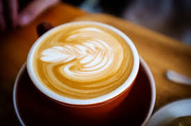
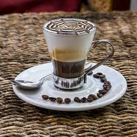
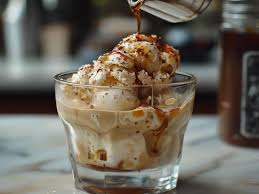

Espresso

Sade ve yoğun kahve keyfi.
Malzemeler
- Espresso çekirdeği: 10 g
- Su: 30 ml
Tarif
- Espresso makinesini hazırlayın.
- Çekirdekleri öğütün ve makineye yerleştirin.
- Suyu ekleyip, espressoyu çekmeye başlayın.
- Kahve fincana akmaya başlayınca, servise hazırdır.
Cappuccino

Espresso, buharda süt ve süt köpüğü ile hazırlanır.
Malzemeler
- Espresso: 30 ml
- Süt: 100 ml
- Süt köpüğü: 50 ml
Tarif
- Espressoyu hazırlayın ve fincana dökün.
- Sütü buharda ısıtın ve köpürtün.
- Köpürttüğünüz sütü espresso üzerine ekleyin.
- Üzerine kakao serpip servis edin.
Macchiato

Espresso üzerine bir kaşık süt köpüğü eklenerek hazırlanır.
Malzemeler
- Espresso: 30 ml
- Süt köpüğü: 1 kaşık
Tarif
- Espressoyu hazırlayıp bir fincana dökün.
- Sütü köpürterek espressoyun üzerine bir kaşık süt köpüğü ekleyin.
- Macchiato hazır. Servis edin!
Latte
Espresso ve buharda süt karışımı.
Malzemeler
- Espresso: 30 ml
- Süt: 150 ml
- Süt köpüğü: 20 ml
Tarif
- Espressoyu hazırlayın ve bir fincana dökün.
- Sütü ısıtıp köpürtün.
- Köpürttüğünüz sütü espressoyun üzerine dökün.
- Latte hazır! Üzerine hafif bir süt köpüğü ekleyebilirsiniz.
Ristretto
Yoğun ve sert bir kahve çeşidi, daha az suyla demlenir.
Malzemeler
- Espresso çekirdeği: 10 g
- Su: 20 ml
Tarif
- Espresso makinesinde daha az su kullanarak espressoyu hazırlayın.
- Fincana dökün ve sıcak servis edin.
Cortado

Eşit miktarda espresso ve sıcak süt karıştırılarak hazırlanır.
Malzemeler
- Espresso: 30 ml
- Süt: 30 ml (buharda ısıtılmış, ancak köpürtülmemiş)
Tarif
- Espressoyu Hazırlayın: Espresso makinesi kullanarak 30 ml espresso hazırlayın.
- Sütü Isıtın: Sütü buharda ısıtın, ancak köpürtmeyin. Cortado'nun özelliği, süt ile espressoyun eşit oranda karıştırılmasıdır.
- Espresso ve Sütü Karıştırın: Hazırladığınız espressoyu bir fincana dökün ve üzerine ısınmış sütü ekleyin.
- Karıştırın ve Servis Edin: Süt ve espressoyu nazikçe karıştırarak servis edin.
Caffè Marocchino
Espresso, süt köpüğü ve çikolata tozu ile hazırlanır.
Malzemeler
- Espresso: 30 ml
- Süt: 50 ml
- Çikolata tozu: 1 tatlı kaşığı
Tarif
- Espressoyu hazırlayın ve bir fincana dökün.
- Sütü köpürtün ve üzerine ekleyin.
- Çikolata tozunu serpiştirip karıştırın.
- Caffè Marocchino hazır! Servis edin.
Flat White
Espresso üzerine ince süt köpüğü eklenir.
Malzemeler
- Espresso: 30 ml
- Süt: 150 ml
- Süt köpüğü: 20 ml
Tarif
- Espressoyu hazırlayın ve bir fincana dökün.
- Sütü ısıtıp köpürtün ve ince bir köpük oluşturun.
- Köpürttüğünüz sütü espressoyun üzerine dökün.
- Flat White hazır! Sıcak servis edin.
Affogato
Vanilyalı dondurma üzerine sıcak espresso dökülerek hazırlanır.
Malzemeler
- Vanilyalı dondurma: 1 top
- Espresso: 30 ml
Tarif
- Bir top vanilyalı dondurma bir kaseye koyun.
- Espressoyu hazırlayın ve dondurmanın üzerine dökün.
- Affogato hazır! Sıcak servis edin.